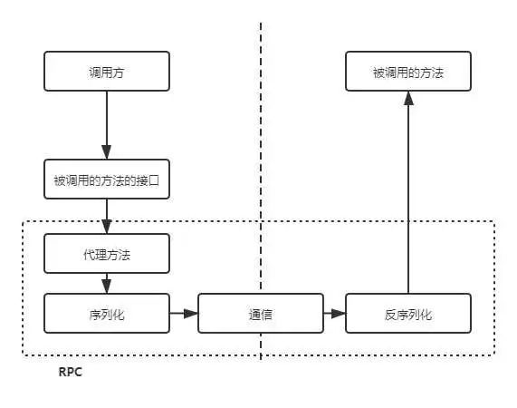
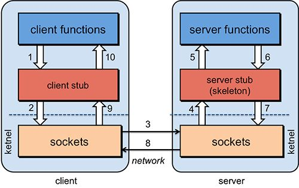
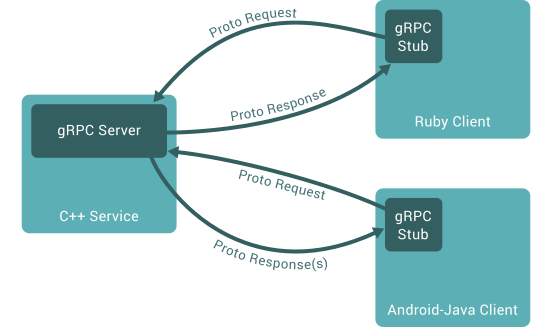
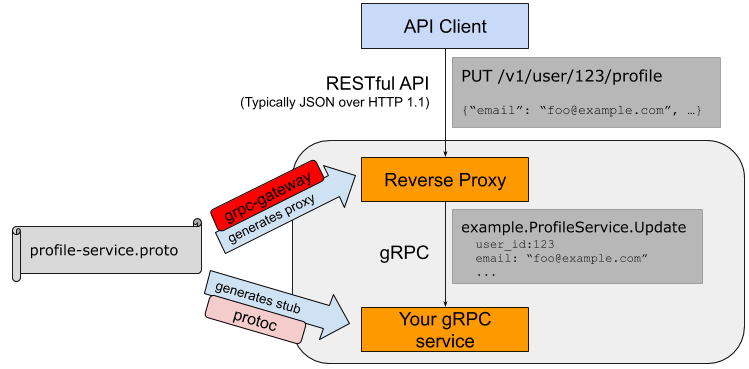
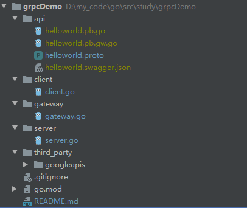
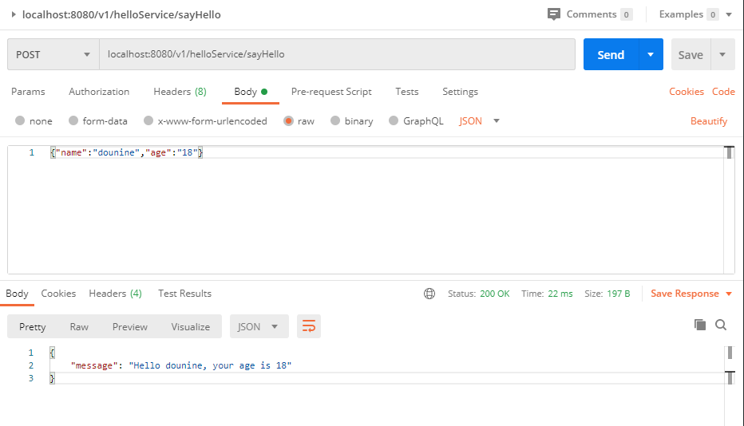

0. 前言
实习期间，公司项目使用 gRPC 框架。因此，简单入门一下 grpc。
项目代码地址：gitee
1. 微服务概述
在提起 GRPC 之前，不得不提起微服务。
long long ago，互联网还未繁荣起来，当时的网站应用功能较为简单，用户数量较少，应用代码只需部署在一台服务器上，便足矣。这种把应用整体打包部署的方式，也被称为单体架构。
但好景不长，随着互联网的迅猛发展，网站人数暴增，应用也开始变得复杂。这时，便出现了许多问题，比如：一台服务器容易出现性能瓶颈、应用代码稍微修改后便要重新部署、一个小服务的错误便会导致整个应用崩溃等等。
于是，应用开始分为各种小应用，分布式进行部署，同时采用负载均衡分摊各自的压力。
随着这种方式的不断发展，微服务架构（Microservices Architecture） 出现了。微服务架构的核心思想是：一个应用可分割为多个小的、相互独立的微服务，这些服务可以运行在各自的服务器、各自的进程中，开发和发布都没有依赖。不同服务通过一些轻量级交互机制来通信，服务可独立扩展伸缩，每个服务定义了明确的边界，不同的服务甚至可以采用不同的编程语言来实现，由独立的团队来维护。
微服务架构的优点已经不言而喻了：高耦合低内聚，甚至连开发语言都可以不同。
当然，微服务架构也存在其缺点：运维开销及成本增加、测试难度增大、提高了系统复杂性等等。
参考博客：
2. RPC 概述
有了微服务架构，那么我们就要考虑各微服务之间如何进行通信了。HTTP 肯定不失为一种有效的方法，但此处要提起的却是另一种方法：RPC。
RPC 的英文全称是 Remote Procedure Call，即远程过程调用，简单点说，就是服务器A可以像函数调用一样调用服务器B上的方法。
其原理大致如下：

其组成结构大致如下：

可以看出，RPC 底层依然使用 TCP 等运输层协议进行网络通信，它跟 HTTP 较为相似，但比 HTTP 更便捷的是，它还封装了序列化与反序列化的功能。
或许，说到此处，还会有人疑惑：其实 HTTP 外加一层序列化与反序列化的封装后，也能实现 RPC 的功能，为何还需要使用 RPC 呢？
其实，HTTP 与 RPC 各有千秋。甚至在 gRPC 中，其底层就是 HTTP2 协议。所以，并没有孰优孰劣，只是可能 RPC 更加适用于服务与服务之间的通信，不需要 HTTP1 协议中多余的头部，序列化与反序列化的功能也更加完善，而且封装程度高、即拿即用，毕竟谁不喜欢方便呢？
注意：另外，换一种说法，RPC 与 HTTP 并不在同一层面上，并不能直接比较。毕竟 HTTP 是一个应用层协议，而 RPC 更像一种通信机制、一种框架，它内部可能使用自己编写的应用层协议，也可能就是 HTTP 协议。文中的 HTTP 与 RPC 比较，可以看成是 Restful API 与 RPC 的比较。
参考博客：
3. gRPC 概述
gRPC 是谷歌开发的一个开源、高性能 RPC 框架，它底层使用 HTTP2 协议，并支持多种语言。
gRPC is a modern open source high performance RPC framework that can run in any environment.
以下是 gRPC 的官方概述：
In gRPC, a client application can directly call a method on a server application on a different machine as if it were a local object, making it easier for you to create distributed applications and services. As in many RPC systems, gRPC is based around the idea of defining a service, specifying the methods that can be called remotely with their parameters and return types. On the server side, the server implements this interface and runs a gRPC server to handle client calls. On the client side, the client has a stub (referred to as just a client in some languages) that provides the same methods as the server.

同时，gRPC 使用 Protocol Buffers（一个谷歌出品的成熟的序列化框架）定义接口。
那么，gRPC 有何优点呢？如下所示：
性能。gRPC具有较好的性能，其原因包含如下几点：
- 应用层通信使用了
HTTP/2协议。HTTP/2 协议具有：头部采用二进制编码，并进行压缩；服务器推送；多路复用等优势，极大地提高了传输性能。 - 数据结构序列化使用了谷歌的
Protocol Buffers协议。其最后生成的数据体积、序列化性能都优于 json、xml 等。
- 应用层通信使用了
流。可以流式地发送和返回数据，比如：客户端想周期性地从服务端获取数据，以 HTTP/1.1 的方式则是轮询，而在 gRPC 中只需定义流式地返回数据即可。这点得益于
HTTP/2。清晰的API规范。相比于
Swagger API的接口定义规范，.proto文件所的定义更加清晰。
参考博客：
4. gRPC-go 尝试
首先，需要安装 Protocol buffer 编译器 protoc。
然后，安装用于生成 go 代码的 protoc-gen-go 插件：
1 | go get github.com/golang/protobuf/protoc-gen-go |
之后，可参考官方示例，运行 grpc-helloworld 程序：go quickstart
5. gRPC-Gateway 概述
有了 gRPC 框架之后，服务之间的通信不成问题了。但是，人们又想，能不能通过 protocol 接口文件直接生成 RESTful HTTP API 呢？这样，微服务的接口不仅能通过 gRPC 被其它服务所调用，也能通过 HTTP 被浏览器端用户调用了。
基于这样的愿景，gRPC-Gateway 出道了。
官方文档如是说道：
The grpc-gateway is a plugin of the Google protocol buffers compiler protoc. It reads protobuf service definitions and generates a reverse-proxy server which translates a RESTful HTTP API into gRPC.
This helps you provide your APIs in both gRPC and RESTful style at the same time.

可以看出，grpc-gateway 能够根据 .proto 文件生成 HTTP 服务器代码 Reverse Proxy，并将 gRPC 接口转换成对应的 RESTful API。当 HTTP 客户端访问 API 时，Reverse Proxy 会将 HTTP 请求转换成对应的 gRPC 请求，并交给 gRPC service。
6. gRPC-Gateway 尝试
OS：Windows10 pro
首先，需要安装 grpc-gateway 对应的 protoc 插件：
1 | go get github.com/grpc-ecosystem/grpc-gateway/protoc-gen-grpc-gateway |
然后，在 grpc-helloworld 程序的基础上，我们稍加改动。
项目目录如下：

修改 helloworld.proto 接口定义文件如下（google/api/annotations.proto 见grpc-gateway/third_party/googleapis/）：
1 | syntax = "proto3"; |
生成 grpc 相关文件 .pb.go，其中包括 用于序列化我们请求响应数据的代码、grpc 客户端 和 grpc 服务端：
1 | protoc -I%PROTOC_INCLUDE% -I%GOPATH%\src -Ithird_party\googleapis -I. --go_out=plugins=grpc:. api\helloworld.proto |
生成 gateway 文件 .pb.gw.go：
1 | protoc -I%PROTOC_INCLUDE% -I%GOPATH%\src -Ithird_party\googleapis -I. --grpc-gateway_out=logtostderr=true:. api\helloworld.proto |
生成 swagger 文档 .swagger.json：
1 | protoc -I%PROTOC_INCLUDE% -I%GOPATH%\src -Ithird_party\googleapis -I. --swagger_out=logtostderr=true:. api\helloworld.proto |
定义 gRPC server 代码如下：
1 | // Package main implements a server for Greeter service. |
定义 grpc gateway 代码如下：
1 | // package main provide http gateway according to rpc-server |
运行 grpc 服务端：
1 | go run server\server.go |
打开另一个命令行，运行 HTTP 网关：
1 | go run gateway\gateway.go |
最后，使用 postman 进行 HTTP API 接口测试：
